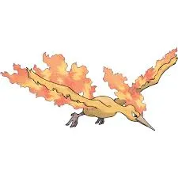
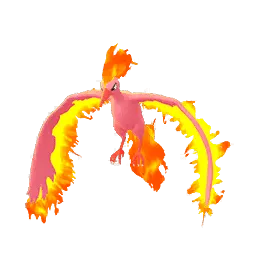

📖 Introduction
The legendary Pokémon Moltres is one of the iconic Legendary birds introduced in the Kanto region. In Pokémon GO, Moltres appears in five-star raids where trainers must work together to defeat it. Because of its strong Fire and Flying-type moves, Moltres can deal heavy damage to many common raid attackers.
However, Moltres also has one of the most exploitable weaknesses in Pokémon GO raids. Its Fire and Flying typing makes it extremely vulnerable to Rock-type attacks, which deal quadruple damage. This means powerful Rock-type Pokémon such as Rampardos or Rhyperior can defeat Moltres very efficiently.
With the right counters and strategy, trainers can defeat Moltres with a relatively small group. This guide explains the best raid strategies, recommended counters, and key tips to help players successfully defeat Moltres in Pokémon GO.
⚔️ Raid Difficulty
Moltres is generally easier than many Legendary raid bosses due to its double weakness to Rock-type moves.
- 2 Trainers: Possible with strong Rock counters
- 3 Trainers: Comfortable clear
- 4–5 Trainers: Very easy
- 6+ Trainers: Guaranteed win
High-level trainers with optimized Rock teams can duo Moltres, especially in Partly Cloudy weather conditions.
🧠 Moltres Raid Strategy
Moltres is a Fire and Flying-type Legendary Pokémon that deals strong damage but has relatively low bulk compared to other raid bosses.
Its double weakness to Rock-type moves makes it one of the fastest Tier 5 raids when using proper counters.
- 🪨 Use Rock-type Pokémon for maximum damage
- ⚡ Electric and 💧 Water are secondary options
- ⚠️ Avoid weak teams — Moltres deals high damage
⚡Quick picks
- Best Mega Team: Aerodactyl, Tyranitar, Diancie
- Best Shadow Team: Tyranitar, Tyrantrum, Rampardos
❌ Common Raid Mistakes
- Using non-Rock counters despite the double weakness.
- Ignoring weather boosts that strengthen Moltres.
- Not using Mega Pokémon for team-wide damage boost.
📌 Is Moltres Worth Raiding?
Yes, for these reasons:
- Legendary Pokémon with high attack.
- Great for PvE collection
- Strong shiny variant available.
- Useful for future PvP raids if needed.
⚠️ Moltres Weaknesses
Moltres is extremely vulnerable to Rock moves.
| Category | Details |
|---|---|
| ❌ Weak to |
 Rock • Rock •
 Electric • Electric •
 Water Water
|
| ✅ Resists to |
 Fighting • Fighting •
 Ground • Ground •
 Steel • Steel •
 Bug • Bug •
 Fire • Fire •
 Grass • Grass •
 Fairy Fairy
|
Notes: Avoid Grass-type Pokémon as they deal very low damage.
Tip: Rock-type Pokémon deal 256% damage, making this one of the fastest Legendary raids.
🗡️ Best Moltres Counters
To defeat Moltres efficiently, prioritize Rock-type attackers above all else. Water and Electric types are effective, but Rock types outperform them significantly due to the double weakness advantage.
🪨 Rock-Type Counters (Top Priority)
Rock-type Pokémon are the strongest counters against Moltres. Because of the double weakness, even average Rock attackers can deal massive damage. High-attack Rock Pokémon with Rock Throw or Smack Down combined with Stone Edge or Rock Slide are ideal choices.
Using a Mega Rock-type Pokémon can boost Rock damage for the entire raid group. If coordinated properly, this can shorten raid duration substantially.
- Rampardos: (Smack Down / Rock Slide)
- Terrakion: (Smack Down / Rock Slide)
Highest Rock-type DPS in the game. Glass cannon, so dodge charged moves carefully.
Excellent bulk + strong Rock moves. Very effective against Fire/Flying.
💧 Water-Type Counters
Water-type Pokémon deal super-effective damage to Moltres’ Fire typing. They are strong alternatives if you lack optimized Rock attackers. Rainy weather boosts Water-type moves, making them more competitive.
- Kyogre: (Waterfall / Origin Pulse)
- Blastoise: (Hydro Cannon)
Extremely high attack DPS
Tanky attacker
⚡ Electric-Type Counters
Electric-type Pokémon exploit Moltres’ Flying typing. They provide consistent damage and solid survivability. Rainy weather also boosts Electric-type attacks, making them useful in certain conditions.
- Ampharos: (Volt Switch)
Electric moves do 2× damage to Flying-types. Safe option, especially for solo raids.
Difficulty
Its fast-charging Fire and Flying attacks can quickly overwhelm unprepared Pokémon. Coordinating a team with high DPS Rock-, Electric-, or Water-type attackers ensures faster victories. In larger raids, sheer damage output overwhelms Moltres, but dodging can still improve survival chances.
🌦️ Weather Boost Effects
Weather conditions strongly affect Moltres raids:
🌧️ Rainy Weather
- Boosts Electric- and Water-type counters.
🌬️ Windy Weather
- boosts Moltres’ Flying-type moves
⛅ Partly Cloudy Weather
- boosts Rock type counters
☀️ Sunny Weather
- boosts Moltres’ Fire-type moves
Partly Cloudy weather is ideal because it enhances Rock damage. Avoid Sunny or Windy weather when possible, as these conditions strengthen Moltres’ own attacks.
📊 Moltres Stats
| Type | Fire / Flying |
| Max CP | 3917 |
| Weather Boost | Windy, Sunny |
| Shiny | Yes |
| Base Attack | 251 |
| Base Defence | 181 |
| Base Stamina | 207 |
Moltres’ high attack stat makes it dangerous in raids if you don’t use type-effective counters.
🏆 Best Regular Counters
Regular Pokémon that amplify the right types give you a powerful edge. Below are top Regular counters with short notes on why they excel.
| Pokémon | 🗡️ Fast Moves | 💥 Charged Moves | 🔄 Elite Moves | 🏆 Best Moves | 🧪 Why This Counter Works |
|---|---|---|---|---|---|
| Stonjourner | Rock Throw | Stone Edge / Rock Slide / Stomp | None | Rock Throw and Rock Slide | Rock-type attacks exploit Moltres’ double Rock weakness, dealing 256% damage and making it highly efficient. |
| Aerodactyl | Rock Throw / Steel Wing / Dragon Breath / Bite | Hyper Beam / Earth Power / Ancient Power / Rock Slide / Iron Head | None | Rock Throw and Rock Slide | Rock Throw and Rock Slide take advantage of the double Rock weakness while Aerodactyl resists Fire-type moves. |
| Gigalith | Mud Slap / Smack Down | Superpower / Rock Slide / Heavy Slam / Solar Beam | Meteor Beam | Smack Down and Meteor Beam | Smack Down plus Meteor Beam delivers very high Rock-type burst damage against Moltres’ 4x weakness. |
| Terrakion | Double Kick / Smack Down / Zen Headbutt | Close Combat / Earthquake / Rock Slide | Sacred Sword | Smack Down and Rock Slide | Smack Down and Rock Slide provide consistent high DPS that fully exploits Moltres’ double Rock weakness. |
| Tyrantrum | Rock Throw / Dragon Tail / Charm | Earthquake / Stone Edge / Meteor Beam / Rock Tomb / Outrage / Crunch | None | Rock Throw and Meteor Beam | Strong Rock-type fast and charged moves deal massive super-effective damage against Fire/Flying typing. |
| Rhyperior | Mud Slap / Smack Down | Skull Bash / Superpower / Earthquake / Stone Edge / Surf / Breaking Swipe | Rock Wrecker | Smack Down and Rock Wrecker | Smack Down with Rock Wrecker is one of the highest DPS Rock combinations against Moltres’ double weakness. |
| Rampardos | Smack Down / Zen Headbutt | Rock Slide / Flamethrower / Outrage | None | Smack Down and Rock Slide | Extremely high Attack stat combined with Smack Down makes it one of the hardest-hitting Rock attackers in the game. |
| Tyranitar | Iron Tail / Dragon Breath / Bite | Stone Edge / Fire Blast / Crunch / Brutal Swing | Smack Down | Smack Down and Stone Edge | Smack Down and Stone Edge fully capitalize on the double Rock weakness while offering good bulk. |
| Primal Kyogre | Waterfall | Hydro Pump / Surf / Thunder / Blizzard / Avalanche | Origin Pulse | Waterfall and Origin Pulse | Waterfall and Origin Pulse hit Moltres’ Fire typing super effectively while boosting Water-type teammates. |
| Omastar | Mud Shot / Water Gun | Hydro Pump / Ancient Power / Rock Blast | Rock Throw / Rock Slide | Rock Throw and Rock Slide | Rock Throw and Rock Slide deal double super-effective damage and provide steady Rock-type pressure. |
👤 Best Shadow Counters
Shadow Pokémon that amplify the right types give you a powerful edge. Below are top Shadow counters with short notes on why they excel.
| Pokémon | 🗡️ Fast Moves | 💥 Charged Moves | 🔄 Elite Moves | 🏆 Best Moves | 🧪 Why This Counter Works |
|---|---|---|---|---|---|
| Shadow Sudowoodo | Counter / Rock Throw | Stone Edge / Earthquake / Rock Slide / Rock Tomb / Meteor Beam / Trailblaze | None | Rock Throw and Meteor Beam | Shadow boost increases Rock-type damage, amplifying the double weakness for very high DPS. |
| Shadow Rampardos | Smack Down / Zen Headbutt | Rock Slide / Flamethrower / Outrage | None | Smack Down and Rock Slide | Shadow bonus combined with its massive Attack stat makes it one of the highest DPS options available. |
| Shadow Omastar | Mud Shot / Water Gun | Hydro Pump / Ancient Power / Rock Blast | Rock Throw / Rock Slide | Rock Throw and Rock Slide | Shadow amplification boosts Rock-type damage significantly against Moltres’ 4x weakness. |
| Shadow Golem | Mud Slap / Mud Shot / Rock Throw | Stone Edge / Earthquake / Rock Blast / Ancient Power | None | Rock Throw and Stone Edge | Rock Throw and Stone Edge benefit from both double weakness and Shadow damage boost. |
| Shadow Regirock | Lock-On / Rock Smash / Rock Throw | Focus Blast / Stone Edge / Zap Cannon | Earthquake | Rock Throw and Stone Edge | Shadow boost improves Stone Edge damage, increasing overall Rock-type DPS output. |
| Shadow Aurorus | Rock Throw / Powder Snow / Frost Breath | Ancient Power / Meteor Beam / Hyper Beam / Weather Ball / Blizzard / Thunderbolt | None | Rock Throw and Meteor Beam | Rock Throw and Meteor Beam deal heavy double super-effective damage with added Shadow boost. |
| Shadow Aggron | Smack Down / Iron Tail / Metal Sound / Dragon Tail | Stone Edge / Rock Tomb / Meteor Beam / Heavy Slam / Thunder | None | Smack Down and Meteor Beam | Smack Down and Meteor Beam hit for double super-effective damage while Shadow increases output. |
| Shadow Alola Golem | Volt Switch / Rock Throw | Stone Edge / Wild Charge / Rock Blast | Rollout | Rock Throw and Stone Edge | Rock Throw exploits double weakness while Shadow bonus enhances total damage dealt. |
| Shadow Archeops | Wing Attack / Steel Wing | Dragon Claw / Ancient Power / Crunch | None | Wing Attack and Ancient Power | Ancient Power benefits from Moltres’ double Rock weakness and Shadow attack increase. |
| Shadow Aerodactyl | Rock Throw / Steel Wing / Dragon Breath / Bite | Hyper Beam / Earth Power / Ancient Power / Rock Slide / Iron Head | None | Rock Throw and Rock Slide | Shadow boost combined with Rock Throw makes it an extremely aggressive Rock-type attacker. |
| Shadow Gigalith | Mud Slap / Smack Down | Superpower / Rock SLide / Heavy Slam / Solar Beam | Meteor Beam | Smack Down and Meteor Beam | Shadow bonus amplifies Smack Down and Meteor Beam for heavy Rock-type burst damage. |
| Shadow Tyrantrum | Rock Throw / Dragon Tail / Charm | Earthquake / Stone Edge / Meteor Beam / Rock Tomb / Crunch / Outrage | None | Rock Throw and Meteor Beam | Rock Throw and Meteor Beam benefit from both double weakness and Shadow damage increase. |
| Shadow Rhyperior | Mud Slap / Smack Down | Skull Bash / Superpower / Earthquake / Stone Edge / Surf / Breaking Swipe | Rock Wrecker | Smack Down and Rock Wrecker | Smack Down and Rock Wrecker with Shadow boost produce extremely high DPS against Moltres. |
| Shadow Tyranitar | Iron Tail / Dragon Breath / Bite | Stone Edge / Fire Blast / Crunch / Brutal Swing | Smack Down | Smack Down and Stone Edge | Shadow amplification boosts Stone Edge damage while exploiting Moltres’ double Rock weakness. |
⚡ Best Mega Counters
Mega Pokémon that amplify the right types give you a powerful edge. Below are top Mega counters with short notes on why they excel.
| Pokémon | 🗡️ Fast Moves | 💥 Charged Moves | 🔄 Elite Moves | 🏆 Best Moves | 🧪 Why This Counter Works |
|---|---|---|---|---|---|
| Mega Diancie | Tackle / Rock Throw | Rock Slide / Power Gem / Moonblast | None | Rock Throw and Rock Slide | Rock Throw and Rock Slide deal double super-effective damage while boosting Rock-type teammates. |
| Mega Aerodactyl | Rock Throw / Steel Wing / Dragon Breath / Bite | Hyper Beam / Earth Power / Ancient Power / Rock Slide / Iron Head | None | Rock Throw and Rock Slide | Provides team-wide Rock boost and extremely high Rock-type DPS against Moltres. |
| Mega Tyranitar | Iron Tail / Dragon Breath / Bite | Stone Edge / Fire Blast / Crunch / Brutal Swing | Smack Down | Smack Down and Stone Edge | Boosts all Rock-type attackers while dealing massive double super-effective damage itself. |
| Mega Blastoise | Rollout / Water Gun / Bite | Skull Bash / Flash Cannon / Hydro Pump / Ice Beam | Hydro Cannon | Rollout and Hydro Cannon | Hydro Cannon hits Fire typing super effectively while boosting Water-type teammates. |
| Mega Rayquaza | Air Slash / Dragon Tail | Aerial Ace / Dragon Ascent / Ancient Power / Outrage | Hurricane / Breaking Swipe | Dragon Tail and Outrage | High neutral Dragon-type DPS with strong stats, though Rock types remain superior choices. |
| Mega Ampharos | Charge Beam / Volt Switch | Focus Blast / Power Gem / Trailblaze / Zap Cannon / Thunder / Thunder Punch / Brutal Swing | Dragon Pulse | Volt Switch and Power Gem | Power Gem provides Rock-type coverage while Mega form boosts Electric-type teammates. |
🌀 Moltres Moveset
Moltres primarily uses Fire- and Flying-type moves, making Rock-type Pokémon ideal counters.
🗡️ Fast Moves
- Wing Attack
- Fire Spin
💥 Charged Moves
- Ancient Power
- Fire Blast
- Heat Wave
- Overheat
🔄 Elite Moves
- Sky Attack
Moves to Dodge
- Overheat – massive Fire damage
- Sky Attack – heavy Flying-type attack
🎯 Catch CP & 100% IV
After defeating Moltres, you encounter a normal Moltres.
The CP range after the raid is:
- No Weather Boost: 1,896-1,980 CP
- Weather Boost: 2,370-2,475 CP
100% IV CP values:
- 1980 (Normal)
- 2475 (Weather Boosted)
❓ FAQ
Can Moltres be shiny in Pokémon GO?
Yes! Shiny Moltres is available in raids and has beautiful pink flames.
What moves does Moltres use in raids?
Moltres can use moves like Flamethrower, Sky Attack, and Fire Blast, dealing massive Fire and Flying-type damage to opponents.
Is Rock mandatory?
Rock-types provide the fastest clear, but Electric and Water can work.
Is Moltres difficult to defeat?
With High Attack stat and moderate bulk, Moltres can be challenging. Using type-advantage Pokémon ensures efficient and safe battles.
What makes Moltres unique?
Its Fire/Flying typing, legendary status, and powerful special attacks make Moltres visually striking and strategically valuable in raids.
🎯 How to Catch Moltres
- 🟡 Use Golden Razz Berry
- 🎯 Aim for Excellent Curveball Throws
- ⏱️ Wait for attack animation
- 🌀 Always throw curveballs
✨ Can Moltres Be Shiny in Pokémon GO?
Yes, trainers have a chance to encounter a Shiny Moltres after defeating Moltres in a raid battle. Shiny Moltres has a slightly lighter golden color compared to the regular version, making it a prized catch for collectors.
Legendary raid bosses generally have higher shiny odds than wild Pokémon encounters. Because of this, participating in multiple Moltres raids increases the chance of encountering its shiny form.
When a shiny Legendary Pokémon appears after a raid, it has a guaranteed catch rate if the player lands the Poké Ball successfully. This makes shiny Legendary Pokémon highly desirable among Pokémon GO trainers.
🧬 Best Mega Evolutions
Recommended Megas to use against Moltres:
- Aerodactyl, Tyranitar, Diancie – 🪨 Rock boost
🎁 Raid Rewards
Defeating Moltres in a 5-Star Raid Battle rewards trainers with valuable items such as Rare Candy, Golden Razz Berries, and Technical Machines. The exact rewards depend on raid performance, damage contribution, and friendship bonuses.
| Reward | Typical Amount |
|---|---|
| Golden Razz Berry | 3 – 12 |
| Rare Candy | 3 – 9 |
| Revive | 6 – 15 |
| Hyper Potion | 6 – 15 |
| Fast TM | 0 – 2 |
| Charged TM | 0 – 2 |
| Stardust | 1000 |
Premier Balls
After defeating Moltres, trainers receive Premier Balls to attempt catching it. The number of Premier Balls usually ranges from 8 to 16, depending on:
- Damage dealt during the raid
- Gym control bonus
- Team contribution
- Friendship bonus with other trainers
Extra Rewards
- ~10,000 XP for completing the raid
- Friendship bonus XP when raiding with friends
- Chance to encounter Shiny Moltres
⚖️ Shadow & Mega Comparison
🖼️ Regular vs Shiny Moltres Forms
Shiny Moltres has a slightly lighter golden color compared to the regular version, making it a prized catch for collectors.

Moltres
Images are used for informational and educational purposes only. All rights belong to their respective owners.

Shiny Moltres
Images are used for informational and educational purposes only. All rights belong to their respective owners.
🏁 Conclusion
Moltres raids are straightforward when you exploit its double weakness to Rock. Stack Rock-type attackers, coordinate Mega boosts, and monitor weather conditions for optimal performance. With the right preparation, even small groups can defeat Moltres efficiently.
Prepare your Rock team, take advantage of weather boosts, and add this Legendary Fire/Flying Pokémon to your collection.
To defeat Moltres efficiently, bring high-level Rock, Water, or Electric Pokémon. Small groups need coordinated shields and timing, while large raids can rely on raw DPS. Prioritize type advantage, move selection, and weather boosts for a fast and safe victory.